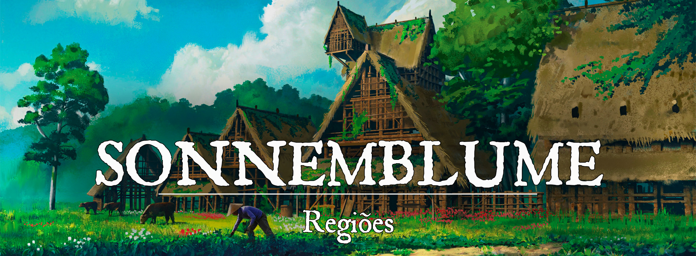

Sonnemblume
Descrição
A cidade possui duas principais características: Sua forte agricultura e sua necessidade de defesa contra o mal. A falta de uma muralha pode causar a impressão de que a cidade está indefesa, mas dentro dela diversos caçadores de crias da noite se preparam todos os dias para o pior. Há uma falta de mercadores fortes na cidade, então ela é muito frequentada por caravaneiros que levam os produtos da cidade para as vizinhas. O centro da cidade é movimentado, com mercadores negociando preços com caravaneiros, mas o resto da cidade é calma. As pessoas são receptivas e sorridentes durante o dia, mas pela noite se tornam arredias e desconfiadas, acostumadas com os anos de ataques
Descrição Visual
A primeira coisa que se nota ao chegar na cidade são as enormes plantações multicoloridas e o anel de girassóis que circunda a cidade. Durante a noite, esses girassóis brilham em dourado, servindo como um farol no meio da noite escura. Há uma enorme estufa de plantas medicinais e materiais alquímicos. A maioria das casas no local são feitas de madeira, uma espécie resistente à incêndios. No centro da cidade, existem três grandes estruturas: O mercado, onde se vende em maior parte artigos agrícolas e ervas. A casa de reuniões, onde os eventos e festas acontecem. A igreja de Hebamme e Hoffe, com seu enorme vitral de girassóis. Muitos guardas caminham pelos arredores da cidade, logo na borda do anel de girassóis
Sociedade
A cidade tem compreendida em si uma cultura de castas, apesar de não ser oficial. Pela falta de locais de ensino como escolas, a maioria dos jovens seguem os passos de seus pais, sendo seus herdeiros de profissão ao se tornarem autossuficientes. Isso cria uma sempre crescente força de agricultores e guardas, mas uma quase inexistente presença de outras funções sociais, como estudantes, exploradores, aventureiros, taverneiros e por assim vai.
População:
Os moradores da cidade têm o costume de se esconder firmemente dentro de suas casas durante a noite, e é muito raro ver alguém passar do círculo de girassóis depois do sol se pôr, nunca se sabe quando o próximo ataque virá, mas é mais provável que seja na calada da noite.
O povo é propenso a julgar forasteiros, especialmente quando agem de forma estranha. Uma pessoa que atravessa para fora do círculo de girassóis à noite certamente deve ter ligação com o mal, ser um necromante ou um bruxo. Em contrapartida, os moradores são receptivos e têm muito respeito por caçadores de sangue, paladinos (salvo os da morte) e clérigos. A cidade não tem muito acesso à educação, mas quase todos os moradores sabem uma coisa ou duas sobre ervas e agricultura, além de saberem algumas coisas sobre mortos vivos simples. Por conta das feridas do passado, a cidade tem o costume de cremar os seus mortos.
O clero é composto por sacerdotes de Hebamme e Hoffe, fazendo com que a maior parte da cidade seja devota a esses deuses. Alguns moradores cultuam Messorem, como uma forma de honrar a memória de seus entes queridos que pereceram.
Cultura
Um povo simples e de pouca instrução, muitos dos habitantes recorrem aos alquimistas ou clérigos como sua fonte de informações. Isso faz com que a cidade seja muito conhecida por seus produtos, sua força religiosa e seu inerente preconceito à coisas muito novas.
Caráter
Muito voltados ao lado religioso, então muito respeitosos com seguidores de deuses bons, principalmente seguidores dos deuses da cidade. Educados com comerciantes, nobres e alquimistas. Neutros para aventureiros comuns, como guerreiros e patrulheiros, ou pessoas da floresta. Fortemente desconfiados/agressivos para qualquer pessoa que não pareça “boa pessoa”. Antipáticos para com magos, bruxos, bardos, artífices... Quaisquer pessoa que seja capaz de domar a magia arcana, por ser a mais comumente usada em rituais de necromancia. Os habitantes podem e normalmente irão, ativamente, planejar assassinatos escondidos para qualquer visitante que porte símbolos macabros, livros necromânticos, ferramentas malignas e outras coisas assim. Não há espaço para neutralidade na cidade, apesar de que algumas pessoas conseguem ser mais compreensivas do que outras.
Datas e Festividades
- Festival da Primavera: um grande encontro de religiosos e fazendeiros, comemorando o começo do mês onde as plantas florescem e o sol brilha mais forte. O clero se organiza para promover orações, romarias e novenas em nome dos deuses do sol, da agricultura e da música, para que os próximos meses sejam fartos e pacíficos.
- A Noite Mais Escura: uma vez por ano, todos os moradores da cidade que não sejam experienciados com combate se reúnem no grande casarão, se escondendo dos perigos. Durante essa noite, mortos vivos de todas as sortes se reúnem para invadir a cidade, mirando num mausoléu subterrâneo, onde se diz estar o segredo da imortalidade.
- Festa da Música: No final da primavera, logo antes do nascer do sol do primeiro dia de verão, uma trupe de bardos, clérigos e paladinos de Rangel entram na cidade cantando e dançando, convidando os moradores da cidade à sair e participar. A cidade é logo toda encontrada em festa, comendo, dançando, bebendo e se divertindo, mesmo que no meio da noite. É muito atípico para os moradores, e várias pessoas visitam a cidade nesse dia para participar da curtição. Dizem que essa festa é um presente de Rangel para Hebbame e Hoffe, tentando alegrar os tão taciturnos moradores da cidade.
Religião
Fortemente religiosa, a cidade era conhecida por sua forte crença no deus da morte, numa tentativa de acalmar os mortos que voltavam a vida. Quando finalmente conseguiram forças para lutar e repelir os mortos, perceberam que sua fé também poderia mudar. Começaram a cultuar o sol, Hoffe, como uma grande força de esperança que vinha se fortalecendo mais e mais. Em sequência, aderiram ao culto da natureza e da agricultura, adorando a ideia da paz de Hebbame. Seus clérigos foram se adaptando à essas duas forças de fé, mas não de maneira distinta. Logo, a cidade tinha uma visão muito positiva da natureza e do sol, somando ambos em uma coisa só: O girassol. Com a nova crença religiosa, a cidade se renomeou para Sonnem, O sol, e Blume, a flor. Nos dias atuais, novas crenças tentam se difundir entre os habitantes, como a crença em deuses da caça, da pureza e principalmente do mercado, mas elas encontram pouco espaço.
Economia
Uma das cidades mais ricas da região de Gronnemar, conhecida por sua extrema proficiência em agricultura, alquimia e perfumes. Seus moradores não veem muito desse dinheiro, mas os mercadores ficam mais ricos com cada caravana que para na cidade. O mercado é de longe a estrutura mais movimentada de toda cidade, com diversos metros de estandes com produtos em diversos preços.
Serviços
A cidade produz artigos de alimentação diversos. Verduras, frutas, grãos, farinhas… Tudo isso sendo vendido por um preço mais baixo que nas cidades vizinhas. Adicionalmente, a cidade produz também produtos alquímicos simples, como pomadas, unguentos, kits de primeiros socorros… E por fim, a cidade possui diversas armas banhadas em prata, água benta e armadilhas de caça.
Os serviços da cidade se encontram principalmente na taverna, com estalagem e alimentação. Existem curandeiros na igreja Helianthus, que podem livrar aventureiros de maldições e doenças. Entusiastas podem se inscrever na guarda para receber o treinamento básico de um caçador, com um custo de 100 PO por ano de treino.
Governo
Conta com muita liberdade, uma consequência dos anos onde prefeitos eram trocados com frequência por morrerem em defesa da cidade. A maioria das pessoas respeita o novo Lider, mas sabe que ele não faz mais do que definir guardas e coletar taxas para pagar a segurança. A "liderança" é feita por normas sociais entre os mercadores e os líderes da guarda, onde um respeita a decisão do outro e procura o prefeito em caso de problemas maiores. A cidade está tentando se comportar como uma cidade independente, mas ainda tem muito da cultura de uma vila pequena presa em seus costumes.
Poderio Militar:
A guarda local é bem treinada, e tem à sua disposição os melhores equipamentos alquímicos que a cidade pode proporcionar quando se tratam de ameaças “malignas”. Todas as armas da guarda são banhadas em prata, para garantir que eles possam afetar os piores tipos de inimigos. Além disso, os religiosos são versados em magias para proteger contra e até mesmo ferir mortos vivos e demônios, servindo como uma força auxiliar à guarda em casos de ataques de mortos vivos. A cidade não é excepcionalmente bem preparada para ataques de bandidos ou outras ameaças humanas, mas compensa a inexperiência com força bruta.
Conflito
Além do constante medo de ataques, a cidade sofre com fortes estigmas sociais para com pessoas que não praticam a magia divina. Magos, feiticeiros, bruxos... Todos sentem a constante pressão dos olhares, julgando e desaprovando. Não são raros os casos de pessoas que acordam mortas por serem suspeitas demais.
A cidade enriqueceu muito rápido, e sem nenhuma regulação de poder. Algumas famílias agora são muito ricas, e não sabem bem onde usar esse dinheiro. Com tempo e criatividade, problemas começam a aparecer... Conversas sobre escravos, sobre animais exóticos sendo mantidos em gaiolas... As enormes mansões escondidas dos olhos, onde ocorrem enormes festas com diversos convidados de longe...
O círculo de girassol é uma ótima proteção para a cidade, gerando luz do sol para proteger os cidadãos perto da borda e dentro das muralhas... Mas e os moradores que não puderam se mudar para dentro dele? Como eles passam as noites, sabendo que a qualquer momento podem ser vítimas de monstros, demônios e mortos vivos?
Organizações Relevantes
- Conclave da Meia Noite: um grupo de humanos que se especializaram em treinar para lutar contra criaturas noturnas, criando técnicas para suprir sua falta de visão noturna. Usam cachorros e lobos como companheiros de combate, por isso tendo o nome de conclave.
- O Mal Necessário: um grupo com pouco mais de 10 membros, entre soldados e guardas da cidade que entendem que só armas e orações não seriam capazes de garantir a segurança da cidade. Eles entendem que são necessários sacrifícios em prol da segurança de seus amigos, vizinhos e amados. Eles se submetem a treinamentos intensos, que alteram suas capacidades permanentemente. Alguns se tornam caçadores de sangue, outros bruxos. Todos estão dispostos a buscar por poder em lugares menos convencionais, e fazem de todo possível para se esconder do estigma social que a cidade impõe nesses tipos de pessoas.
Locais Relevantes
-
Mercado central: Onde acontecem as compras, vendas e trocas da cidade. É enorme, tendo espaço para até 300 estandes de venda ao mesmo tempo. Existem taxas que devem ser pagas para fazer uso do mercado, mas elas são irrisórias, usadas para pagar a guarda da cidade. Diversas caravanas param próximo ao mercado, comprando e vendendo com os mercadores da cidade.
-
Casarão: o que seria a "prefeitura" da cidade. Aqui, o prefeito se reúne com quem quer que solicite uma reunião. É chamado de casarão por ser uma enorme construção cheia de quartos, onde as pessoas se hospedam na noite mais escura.
-
Estufa: a estufa é na verdade um bairro que foi construído ao redor da enorme estufa de vidro, onde os alquimistas cultivam e estudam plantas e seus efeitos. Os moradores desse bairro são em sua grande maioria alquimistas, botânicos ou druidas que ajudam na criação e manutenção das plantas.
-
Portões Floridos: A igreja da cidade, com um enorme vitral de girassol no centro. Onde ocorrem os encontros religiosos, como missas, novenas e sabatinas.
-
Fazenda Rein: Uma fazenda conhecida em Sonnemblume e que é constantemente visitada por aventureiros. Os proprietários, todos pessoas gentis e amigáveis, adoram ouvir as histórias dos aventureiros que passam por lá (especialmente as crianças).
NPCs Relevantes
Origem
A cidade era muito antes uma pequena vila, onde um grupo de madeireiros se juntou para começar um ofício. Com o crescimento da vila, a comunidade decidiu se mover para mais perto do rio, e encontrou um problema: A cidade era constantemente assolada por ataques de mortos vivos, demônios e licantropos. Muitas vezes tiveram de recorrer à ajuda externa, mas usaram disso para se fortalecer começaram a focar seus recursos em defesas, e criaram uma forte presença religiosa. Com os anos, os ataques começaram a ser cada vez menos efetivos, e logo eles se sentiam novamente seguros em suas terras. Para comemorar isso, os clérigos e fazendeiros plantaram um enorme círculo de girassóis ao redor da cidade, para demarcar a região onde se é seguro morar. A forte fé da cidade e sua resistência concederam aos girassóis a benção de brilhar no escuro, como pequenos focos de luz do sol. Com sua fé redobrada, a Vila se renomeou Sonnemblume, se tornando então uma Cidade independente